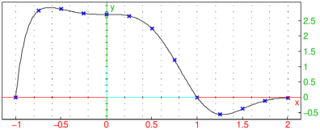
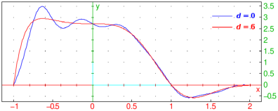

17.1.3 Rational interpolation
Thiele interpolation.
The thiele
command finds the rational interpolation given a tabulated function.
-
thiele takes two or three arguments:
- thiele(data,v) returns
R(v) where R is the Thiele rational interpolant.
- Note that the obtained interpolant may have
singularities in the range [minx,maxx].
Examples
| thiele([[1,3],[2,4],[4,5],[5,8]],x) |
Warning: interpolant has singularities in [4,5]
| assume(a>1):; f:=unapply(thiele([1,2,a],[3,4,5],t),t) |
|
| |
t↦ | | 5 a t−2 a−13 t+10 |
|
| a t−3 t+2 |
|
| | | | | | | | | | |
|
Indeed:
| simplify(apply(f,[1,2,a])) |
In the following example, data is obtained by sampling the function
f(x)=(1−x4) e1−x3 on [−1,2].
| xdata:=linspace(-1.0,2.0,13):;
ydata:=apply(x->(1-x^4)*exp(1-x^3),xdata):;
p:=thiele(xdata,ydata,x) |
|
| | 1.55286115659 x6+5.87298387514 x5−5.4439152812
x4+1.68655817708 x3 | | | | | | | | | |
|
− | | 2.40784868317 x2−7.55954205222 x+9.40462512097 | ⎞
⎠ | / |
| | | | | | | | | |
| 1.24295718965 x5−1.33526268624 x4+4.03629272425
x3 | | | | | | | | | |
|
− | | 0.885419321 x2−2.77913222418 x+3.45976823393 | ⎞
⎠ |
| | | | | | | | | |
|
| plot(t,x=-1..2);
scatterplot(xdata,ydata,color=blue+point_width_2) |

Rational interpolation without poles.
The ratinterp command
computes a family of pole-free rational functions which interpolate given data.
Rational interpolation usually gives better results than the classic
polynomial interpolation, which may oscillate highly in some cases.
-
ratinterp takes one mandatory argument and one or two optional arguments:
-
Matrix data with 2 columns with rows corresponding to points (xk,yk), k=0,1,…,n, or the sequence of lists data_x=[x0,x1,…,xn] and data_y=[y0,y1,…,yn], where a=x0<x1<⋯<xn=b,
- an identifier x, which may also be a number,
symbolic expression or list of numbers a (by default x),
- Optionally, d, an integer such that 0≤ d≤ n (by default ⌊ (n+1)/2⌋).
- ratinterp(data ⟨,var,d ⟩) or
ratinterp(data_x,data_y ⟨,var,d ⟩)
returns a rational interpolation r(a) of the given points using the method of Floater and Hormann (2006).
If a is a list of numbers a1,a2,…,am, then the list [r(a1)…,r(am)] is returned.
There are at most n+1 distinct interpolants which can be specified by varying the parameter d,
which allows you to choose the most suitable one.
Examples
| ratinterp([1,3,5,8],[2,-1,3,4]) |
| ratinterp([1,3,5,8],[2,-1,3,4],x,2) |
With xdata and ydata as in the third example of thiele above:
| plot(ratinterp(xdata,ydata,x,0),x=-1..2,color=blue);
plot(ratinterp(xdata,ydata,x,6),x=-1..2,color=red);
legend(1.5+3i,"$______ @d = 0$",color=blue);
legend(1.5+2.5i,"$______ @d = 6$",color=red); |
